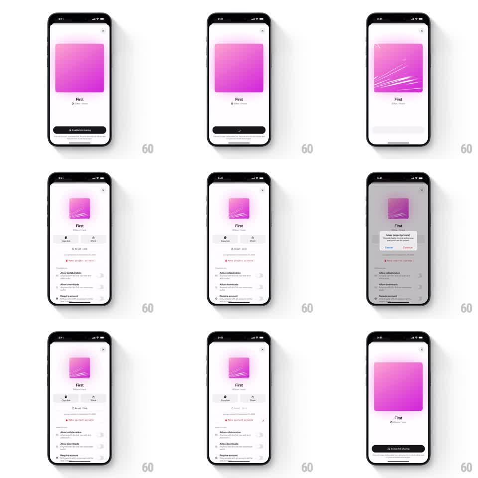

Media
Frame-by-frame

Rebuild this interaction 1:1: an "Enable link sharing" flow - the button spins, the project artwork flips with a 3D card morph revealing a streaked variant, and the sheet expands into link controls (Copy link, Share, Reset link, permission toggles); "Make project private?" confirms before reverting.

Rebuild this interaction 1:1: an "Enable link sharing" flow - the button spins, the project artwork flips with a 3D card morph revealing a streaked variant, and the sheet expands into link controls (Copy link, Share, Reset link, permission toggles); "Make project private?" confirms before reverting. ## Integration Integration: stack-agnostic spec - springs given as stiffness/damping, timed motions as duration + curve; map every value to your framework and animation library of choice. ## Scene Project sheet: pink gradient artwork card with close X, title "First", "Shared - Public" status, bottom dark button "Enable link sharing". Expanded sheet: same artwork (now with white speed-streaks), Copy link / Share buttons, "Reset link" row, red "Make project private" row, toggles for "Allow collaboration", "Allow downloads", "Require account". Confirmation dialog: "Make project private?" with Cancel / Continue. ## Motion spec Pattern: button loading + 3D card flip + sheet growth. - Tap Enable: button label swaps to a spinner (~150ms), holds ~600ms. - Artwork: rotates around its vertical axis (~70deg rotateY with perspective, ~400ms ease-in-out) as the streaked shared-variant fades in - a card-flip, not a swap. - Sheet: height springs open to fit the new controls (spring ~280/26, ~350ms); new rows fade + rise ~12px with 50ms stagger. - Status text flips to "Shared - Public" with the streaks. - Make private: dialog scales in (0.9 -> 1, 200ms) over dimmed sheet; Continue reverses the flip and collapses the sheet back to the Enable state. ## Calibration - The 3D flip happens exactly once per enable/disable - no wobble. - Sheet height animates with content; rows never jump. ## Reduced motion Artwork crossfades; sheet height animates without spring. ## Don't miss - The streak overlay belongs to the shared variant only - private artwork is clean. - Reset link and the private row are red/muted respectively, hierarchy preserved.